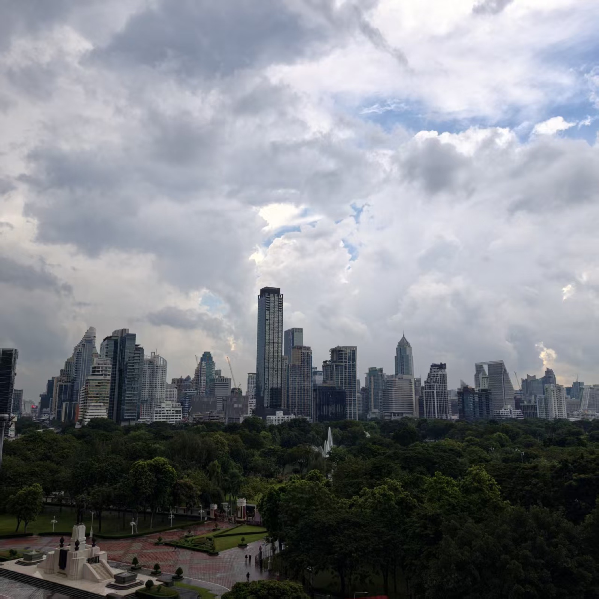
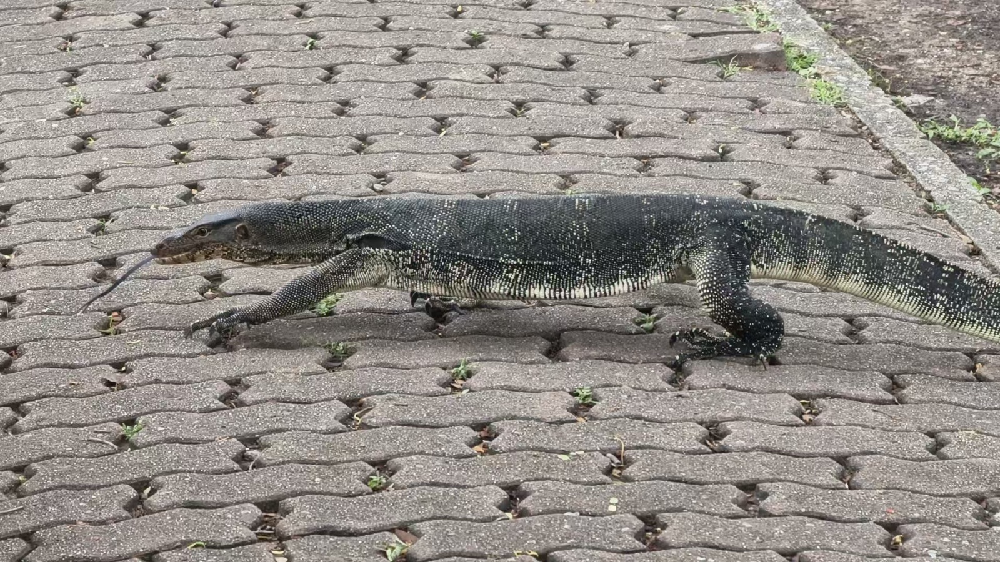
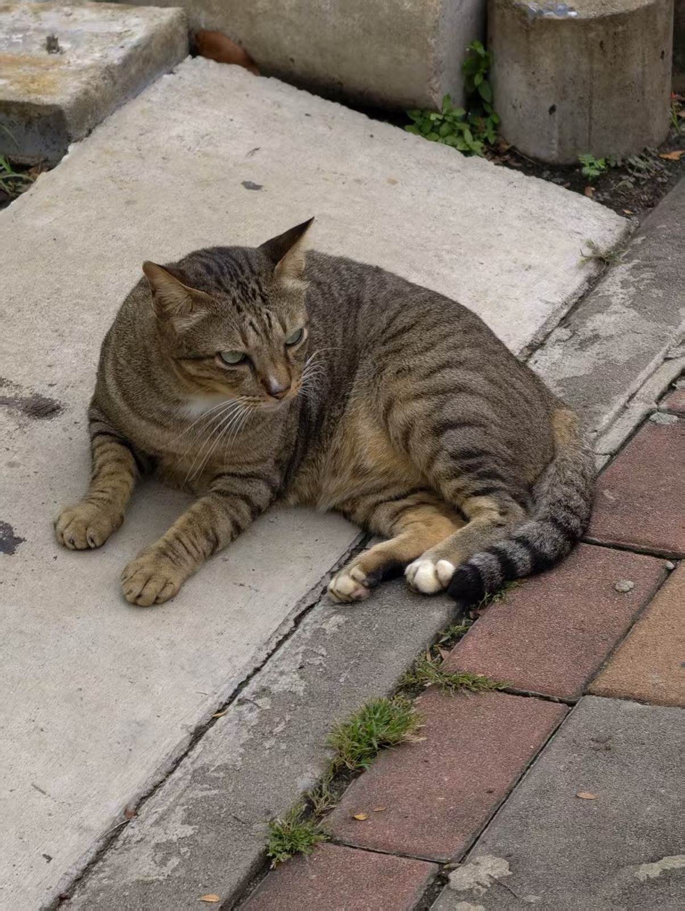
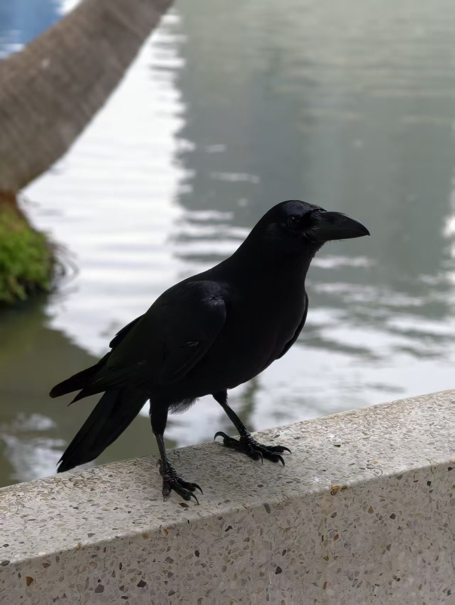
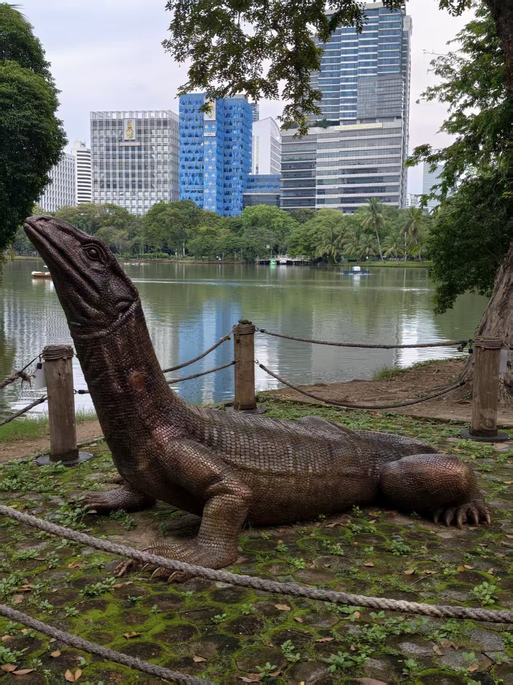

Lumphini Park
中午在 Dusit Central Park 吃完饭，上到天台的花园远眺这座城市。刚下过雨，天气一般。正对面就是 Lumphini Park。

走进公园，在路上撞见一只泽巨蜥。完全不怕人，直接走上了马路。

猫趴在路边，叫了声咪咪，没理我——它在泰国大概另有名字。乌鸦站在湖边的石栏上，嗓音很难听，比国内的乌鸦低沉得多。


湖边的巨蜥铜像，背后是整片市中心。

这里是城市中心的公园，但没有刻意营造成一方净土的样子。风景也远不像小红书上别人修出来的那么精致，反而有些粗粝，没有任何造作。但任何人、任何动物在这里都能被包容——就像曼谷这座城市的气质。